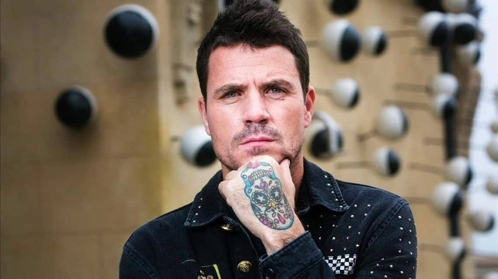

Despacito se mantiene como la canción más escuchada de la historia, 5 a√±os después de su lanzamiento 🏆
Canciones más escuchadas de la historia
| Canción |
Artista |
Año de lanzamiento |
Reproducciones |
| 🥇 Despacito |
Luis Fonsi |
2017 |
8.026.328.506 |
| 🥈 Shape of You |
Ed Sheeran |
2017 |
5.859.726.654 |
| 🥉 See You Again |
Wiz Khalifa |
2015 |
5.718.876.392 |
Hubo un tiempo, no tan lejano, en el que la gente podía escuchar un tema en su ordenador, móvil o radio y posteriormente bailarlo en los bares y discotecas.
Y en ellas, esta canción era la reina. Protagonizada por el cantante puertorrique√±o Luis Fonsi en 2017, aún sigue escuchándose con fuerza por todo el mundo.
Escúchala
Dani Martín desmiente su retirada ¡Qué susto! 😰

El cantante espa√±ol respondió en sus redes sociales a los rumores con una pregunta retórica que ha respondido el mismo:
¿Cómo voy a dejar yo la música? Me muero.
El cantante ha subido un vídeo a sus redes sociales en blanco y negro desmintiendo que haya puesto fin a su carrera:
Bad Bunny se convierte, por tercer a√±o consecutivo, en el artista más escuchado 👑

- BadBunny
- Taylor Swift
- Drake
- The Weeknd
- BTS
Bad Bunny se ha vuelto a coronar como el artista más escuchado del mundo por tercer a√±o consecutivo en Spotify, que acaba de anunciar las canciones, artistas y pódcasts con más tirón de 2022, y el puertorrique√±o es rey del streaming, con un total de 18.300 millones de reproducciones.